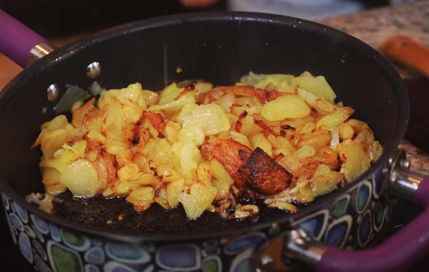

Fried potatoes
Food

| Ingredient |
Amount |
| Potatoes |
600 g |
| Oil |
50 ml |
| Onion |
1 pcs |
- Step 1: Clean, peel and slice potatoes and onions, pour oil into the pan and heat it
- Step 2: Fry potatoes and onions till they are golden brown
- Step 3: Add some salt and serve fried potatoes with maybe ketchup